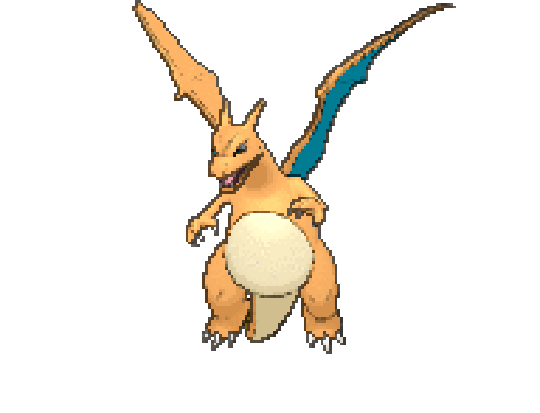
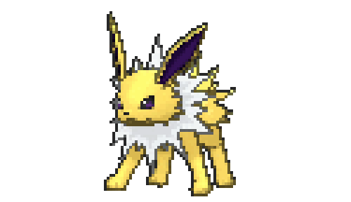
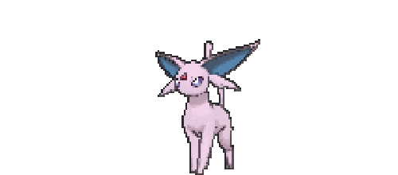
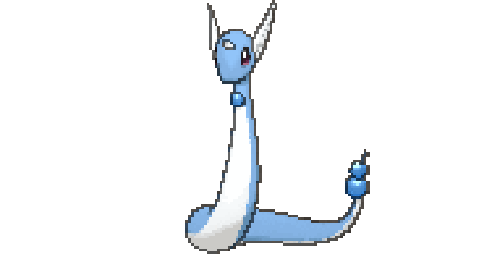

Poké Childhood
As a 90s kid, I was obsessed with Pokemon (actually, I may still be obsessed...). I would wake up early every Saturday to watch the Pokemon anime on Channel 11. When I was younger, I also had little Pokemon toys/figurines. I would play with them inside my big Barbie house. When I was a little older, my brother gave me the video game Pokemon Sapphire, and I enjoyed playing with it.
My Dream Pokemon Team
|  | |
|  | |
|  |  |
Poké Adulthood
I still own all my Pokemon toys and the Pokemon Sapphire game.
Recently, I have been rewatching the Pokemon anime. I also play
Pokemon Go, which is an mobile app that made my childhood dreams of
possibly being able to "catch 'em all" come true. I also have a collection
of Pokemon plushes that is slowing starting to grow.
As you can see, my love for Pokemon won't seem to go away.